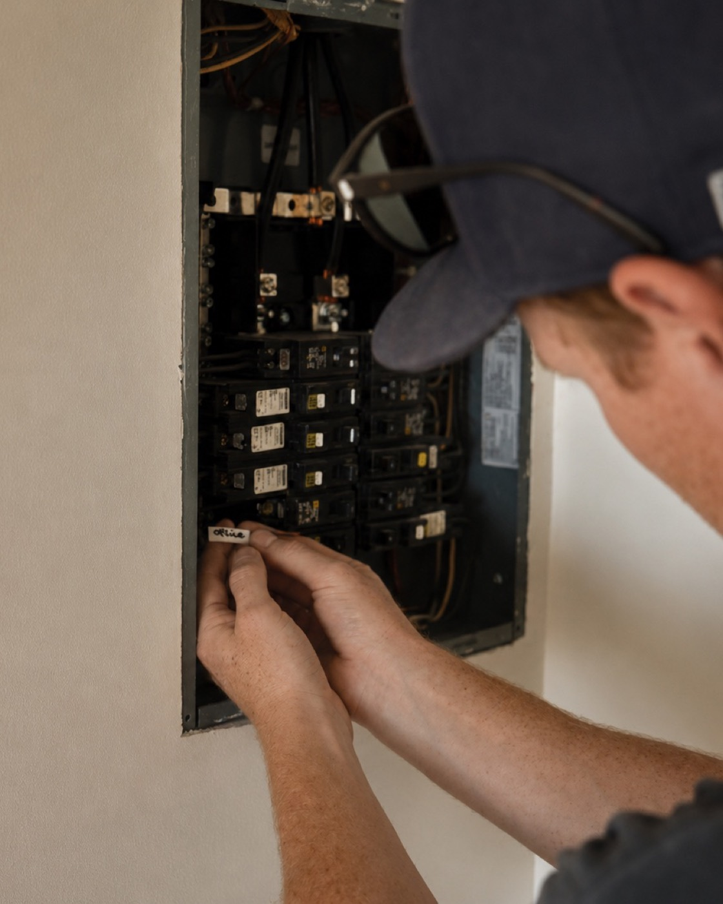

Reputation built your business. Systems scale it.
I partner with ambitious specialty trades and contractors to build the marketing systems behind lasting growth. Strengthening their reputation, creating consistent demand, and helping great businesses get found.
Featured Work
A digital foundation built for a residential electrician working across San Luis Obispo County.
Read the case study→
Great businesses eventually hit the same ceiling.
You built a business people trust.
Referrals keep the phone ringing.
But eventually growth becomes unpredictable.
Not because the work isn’t good.
Because you’ve outgrown the way customers find you.
Eventually you need a more predictable way to generate demand.
Growth isn’t one marketing channel. It’s a connected system.
Most businesses have these pieces.
Search. A website. Some advertising. A few analytics.
They just aren’t connected.
When they’re built in the right order, each one makes the next one stronger.
- Google Business Profile
- Local SEO
- Service Area Strategy
- Service Pages
- Answer Engine Optimization (AEO)
- Website Strategy
- Landing Pages
- Messaging
- Conversion Optimization
- Call Tracking
- Analytics
- Lead Attribution
- Reporting
- Google Ads
- Local Services Ads
- Landing Pages
- Ongoing Optimization
- Booked jobs, tracked back to the channel that produced them.
Every month the system tells you what’s creating booked jobs.
That’s what I scale.
In Their Words
“Every hour I spend on marketing is an hour I’m not on a jobsite. I handed the whole thing to Offsite Growth and it got built without me having to think about it. Three weeks later I had a job on the calendar from someone who found me on Google.”
Adam Keif
Owner, Keif Electric
San Luis Obispo County, CA
Why Offsite Growth
Built around your business.
I don’t start with a package.
I start by understanding how your business works today, where customers come from, where growth slows down, and what success actually looks like.
The work follows the business, not the other way around.
One partner from start to finish.
No account managers.
No handoffs.
No layers between strategy and execution.
You work directly with the person building the system.
Built for home service businesses.
Home service businesses have a different growth model.
Service areas. Urgent demand. Trust. Reviews. High-value jobs.
Everything I build is designed around how contractors actually win work.
Strategy and execution never leave the same set of hands.
The result is a system that fits how your business actually works, and keeps fitting as it grows.
Ready to build a more predictable way to grow?
We’ll look at how customers find you today, what’s limiting growth, and what I’d do if we worked together.
Thirty minutes.
A clear direction either way.